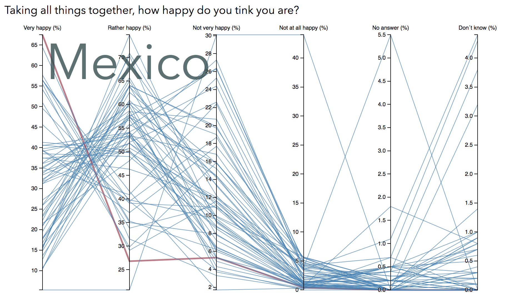
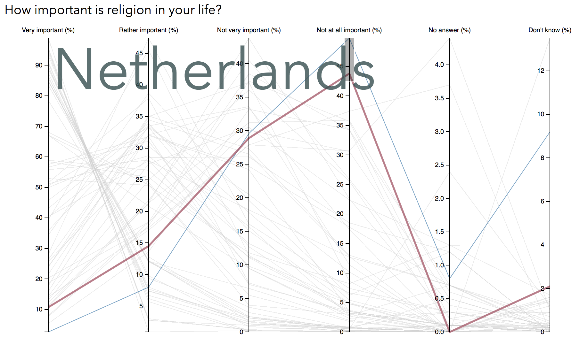
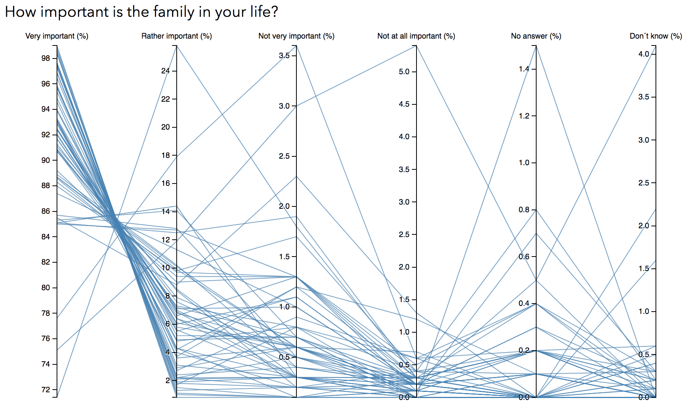

World Values Survey (WVS)
In this project we were asked to investigate the data that WVS had and visualize it in any way, preferably with d3. At first glance, I had difficulty understanding what we had to work with because I think that the data we obtained from WVS was quite complex and I had to process it quite a bit before I could start visualizing it. I wonder a little who this data is for and who it targets? I guess we have got this site and this data to work with, since there is a lot of improvement potential here. It will certainly come loads of nice and easy-to-understand visualizations from the students in this course through this project.
My Visualization
I decided to look into parallel coordinates since it is something we have encountered during the course. My project resulted in a page with a parallel coordinate diagram where you can switch between different categories and see how people in different countries think about that specific area.
Here you can see some examples:

In this example you can see the result on the question about how happy people think they are.
You can hover over the lines to see what country it represent, the country's name will pop up in
the corner, the line will also be a bit thicker and also change color from blue to red.

Here is an example of how it looks like when it is filtered. As you can see the lines that
represents the countries that are sorted out are grey and the one that's left are still blue,
or red if you hover over it.

If we look into the question about family, it clearly shows that the most countries rate
family as very important in their life
A project in the Information Visualization course at KTH
Made by
Karolin Karlsson, karok@kth.se